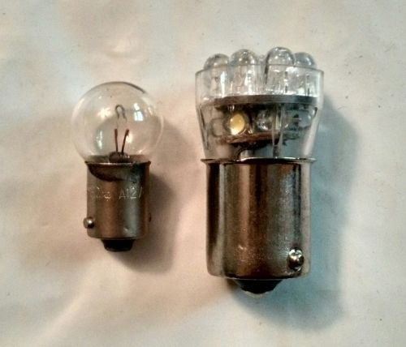

-
I am wondering if anyone has had an issue with Xenon's bulb references being wrong. I ordered 4 LED bulbs to replace the map and license plate bulbs. Both Xenon's page and Superbrightled's listed the bulb as an 89. SBL's replacement for that is bulb 67-w15. They arrived today and there is quite the size issue. The LED for the dome light was a perfect fit however the map lights are a no go. Just checked the license plate bulbs and those aren't even 89's. They are a wedge base bulb. I am so confused as everything I've read is apparently wrong.
Photo for reference…
私♥フェアレディ・ゼット
・1984 300zx N/A -
Also interested as I will be swapping to LEDs soon.1988 300ZX Turbo Shiro Special -
The map lights, even if you were to swap them to LED, would not work that great.
The reason is that the collimating lens of the map light takes advantage of the omnidirectional
nature of light coming from the stock incandescent bulb. It focuses the scattered light into a spotlight.
It's not very efficient but it works.
The light from an LED equivalent, using newer surface mount LED's would be hit and
miss to line one up with the collimating lense of the map light. Yeah, it would emit light,
but not very much of it would hit the optic. LED's do not throw light 360deg like a incandescent bulb,
and if the LED is not properly aligned, most of the light emitted will be wasted inside the map light housing.
How do i know this? I've worked in the optomechanical industry (LED's and SS lasers)
for the last 15 years and more importantly, Me and my OCD have recently done it.
In my conversion, for the map lights and other places, i disassembled the packages that i got from
Amazon and made my own packages to properly align the LED to the optic (This is really important to the edge lit
plexiglass in the instrument cluster and center pod lights) Also in making your own packages, you have to worry about
polarity. It's the same as using LED blade style lights, if they don't work, rotate them 180 in the socket and try again.
Also, incandescent bulbs are more forgiving for position where as LED's need to be more accurately positioned to capture the most irradience.
the above captured in MS paint
#1 captures most of the scattered light from the stock incandescent lamp
#2 uses a forward emitting led. Most of the light misses the edge lit plexiglass or other optic
#3 uses multiple forward emitting led's arranged to shine in a more 360deg pattern. It kinda works but uses more current (miniscule) and wastes more light.
#4 uses a forward emitting LED taken from a blade style lamp and put into a custom package. I used a BiC pen tube and epoxy to make mine long enough
to align properly to the plexiglass in the center pods. This would be the same general idea for the map light collimating optic. But in that case, i just removed
the blade package and soldered the LED leads directly to the bulb contacts, the leads were then bent to align the LED to the optic.
I think i took actual photos but i'll have to look.
84 AE/Shiro #683/Shiro #820/84 Turbo -
Found some photos of the center cluster kluge. I forgot i didnt need to use the bic pen. I disassembled the stock
bulb holders and soldered the LED leads to the contacts.
LED blade package put into the stock bulb holder
Disassembled package and installed into stock bulb holder.
LED was epoxied into place once the optimal position was determined.
The unmodified LED blade package wouldn't fit anyway and it threw
the light directly forward, missing the edge lit plexiglass entirely.
Installed into the cluster. note the led facing the plexiglass
I had to do the exact same thing for the digital cluster edge illumination
It's almost too bright at night without using the dimmer.
I can take a photo of what i did for the map light.
84 AE/Shiro #683/Shiro #820/84 Turbo -
Thanks Z_Karma, that is some really good information. I had actually wondered about the map lights because of the alignment issue. The light already has a small hole to pass through to get to the lens anyway so it would have to be in perfect alignment to have any measurable improvement. The dome light I got is only a 4 LED bulb so while not too bright it is an improvement. I ordered the natural white as I wanted it to appear stock just with better light output. Being natural it should still blend in with the incandescent map bulbs.
As for the license plate bulbs, I assume the #2 in your picture would work fine? Would it be better to get a multidirectional if possible? It's a smaller wedge base so I'm not sure if they will have them in multidirectional or not.
Even with all that I'm still not sure what bulbs to order. All the guides say both the map and license plate bulbs are 89 but they are clearly very different bulbs. Really only concerned with license plate bulbs at this point.私♥フェアレディ・ゼット
・1984 300zx N/A -
Tag light bulbs are #158/194 if that helps you any. Same as the sidemarkers.
1986 300ZX Turbo…sold
1990 Skyline GT-R…new money pit
2014 Juke Nismo RS 6-speed…daily -
Interesting. I've done my climate controls/radio in LED and it was a hit/miss. The LED light is better but ran into some of the issue that Z_Karma pointed out.
What I'd like to know is how SBL's LED headlight kits would work on a Kouki headlight? First hand experience with LED headlights on a Leaf are killer, but that's a completely different housing and reflectors. I'm not confident enough to buy the LED headlights and find out they suck (for my car). -
Grabbed a photo of the Map light kluge before i reinstalled it.
Glass bulb twisted out and LED leads soldered to the lamp socket.
84 AE/Shiro #683/Shiro #820/84 Turbo

Copyright © 2006–. All rights reserved. Privacy Policy